Placed Horses
Audubon Wood, 2016 16h chestnut gelding
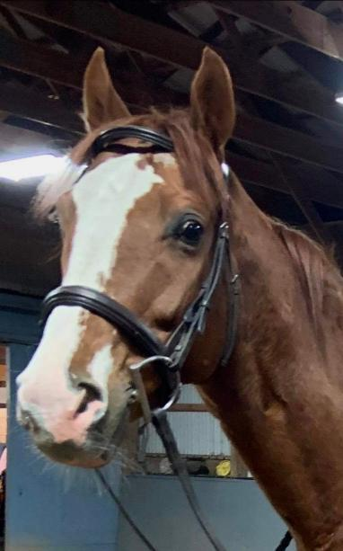
AUDUBON WOOD, 2016 16h chestnut gelding
Located at a farm in Mendon, NY
Woody is described by the H/J trainer who is restarting him as charming, super sweet, sound, and with an easy going great temperament. He also describes Woody as an easy keeper who gets along well with others in turnout, and as an eager pupil who is quickly adapting to learning new things. Woody last raced in December 2020, so he is fully eligible for the 2021 RRP. He had 23 starts, but after breaking his maiden he didn't find the winner's circle again, so his owner realized his heart was no longer in the racing game, and that he would be better suited for a new sport horse career. His owner says he retired completely sound from the track, and never had any issues. He has the quiet temperament, flashy good looks, and movement to stand out in the hunter ring, but with his fabulous sport horse pedigree he is also an exciting prospect for eventing or any new discipline. His sire is Munnings, who is from the Speightstown/Gone West sire line and out of a Holy Bull mare. His dam is by Honour and Glory, who is by Relaunch, and she is out of a Danzig line mare. Woody has been lightly restarted with ground work and a few under saddle rides. From the outset, he stood politely at the mounting block, and has been ridden by a teenager. He is reported to have a light, smooth way of going, and to be a good learner. Act fast to bring this flashy charmer into your life, since the price is likely to go up as he gets more retraining.
Price: $5500 negotiable
Contact: Michael Celso 585-629-8115 (trainer at farm where Woody can be seen by appointment) or Scott Durgan 585-301-6138 (owner)(call as back up if Mr. Celso is not available)
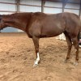
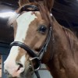
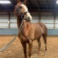
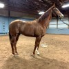
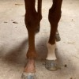
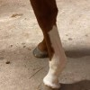
https://www.equibase.com/profiles/Results.cfm?type=Horse&refno=10095182®istry=TToo Many Tales, 2016 16.1h bay mare
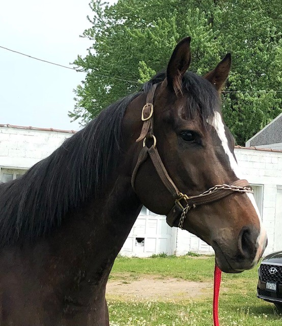
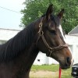
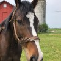
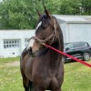
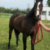
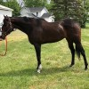
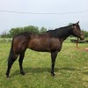
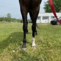
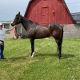
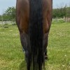
Wicked Concorde, 2018 16+h bay gelding
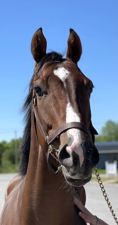
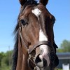
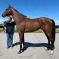
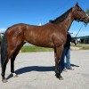
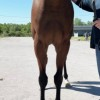
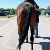
Touch of Nirvana, 2017 15.2-3 h chestnut filly
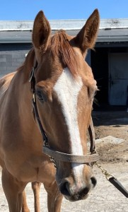
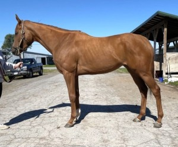
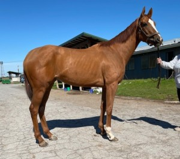
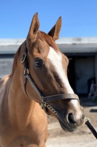
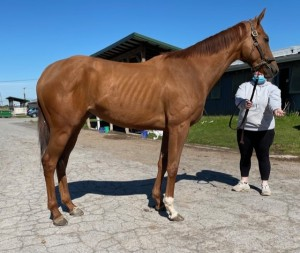
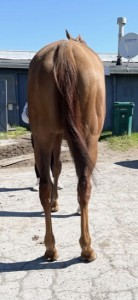
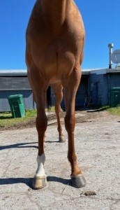
Boston Girl, 2017 15.3h bay filly
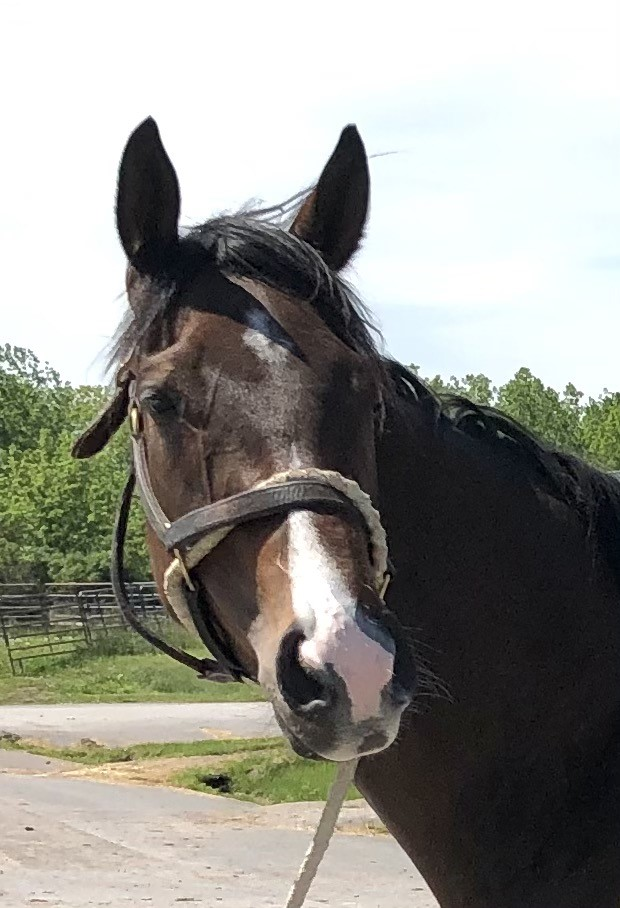
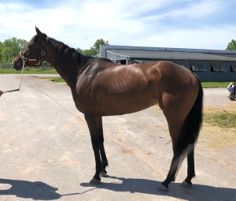
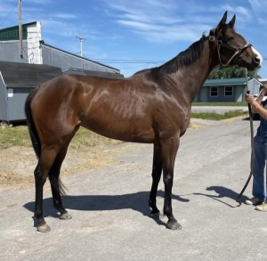
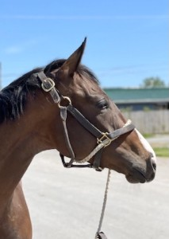
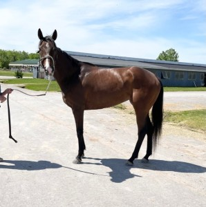
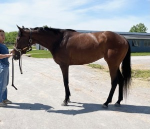
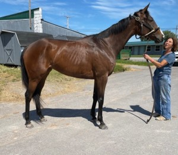
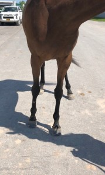
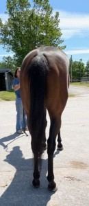
RESILIENT KINDAGUY, 2018 16.2h bay gelding
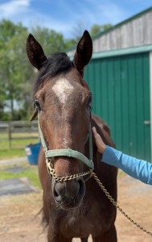
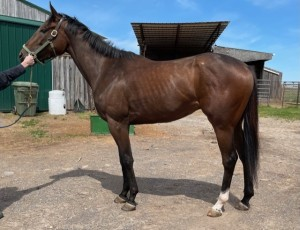
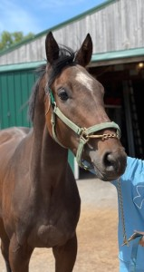
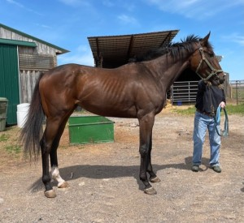
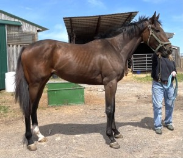
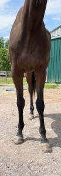
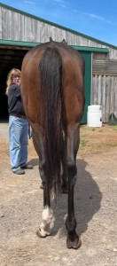
SNAPPY CAT, 2017 16.1h grey gelding
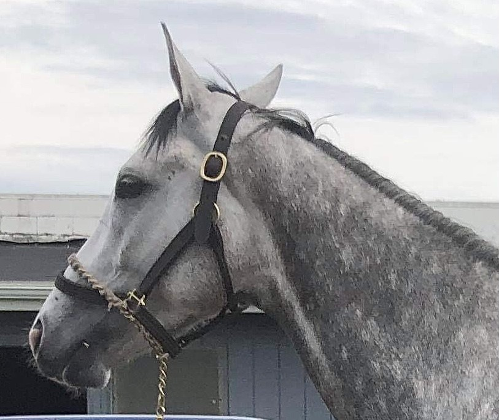
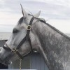
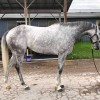
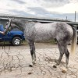
MY LITTLE PRETTY, 2018 15.2h chestnut filly
EARNED SUCCESS, 2015 16h bay gelding
MED SCHOOL MICHAEL, 2017 15.3h chestnut gelding
PITTERPATTER, 2018 17h+ gr/roan gelding
LOFTY REASON, 2017 15.3h bay filly
DREAMS STILL WILD, 2018 15.3h dk. b. filly
UNWAVERING, 2017 16.3h bay gelding
While his pedigree was meant for racetrack stardom, it is also great for sport/jumping disciplines. Into Mischief is a son of Harlan’s Holiday, and that sire and his other sire sons are proving quite popular amongst eventers for producing forward thinking bold jumpers with great stamina. Unwavering’s dam is a half sister to several top stakes winners including top sire Petionville, another sire admired in sport horse disciplines. His dam is from Deputy Minister and Wavering Monarch/Majestic Light lines… terrific sport horse lines!
Price: $2,500
Contact: Paul Ubbink 585-727-8309 (text preferred)
Race record and pedigree: https://www.equibase.com/profiles/Results.cfm?type=Horse&refno=10303158®istry=T&rbt=TB
Jog video: http://youtu.be/QMkYLNxG5bU
A PPE is always recommended. For information about on track vet practices available to do PPEs please see the post pinned to the top of our FB page or the How to Buy menu tab on our website.
AMERS, 2015 15.3h grey mare
GERAGHTY'S GIRL, 2018 15.3h+ bay filly
TRUE BLUE GIANT,2016 16.3h dk bay gelding
Giant Miracle, 2018 16h dark bay filly
DUNHAM BAY, 2018 16h bay gelding
BLUE SKIES FOREVER, 2015 16+h bay gelding
MOMENT OF TRIUMPH, 2014 16+h bay mare
R BOY LITTLE EDDIE, 2018 17.1h chestnut gelding
BANKERS MOONSHINE, 2018 16h dark bay gelding
BIG'S GRAY DAY, 2017 16.1h gray gelding
BIG'S GRAY DAY, 2017 16.1h gray gelding
This beautiful young gelding is described by his trainer as very friendly, and "such a good guy!" He is sound with clean legs, but since he got a taste of farm life while on winter break, he has decided that he would rather do something else than be a race horse. With his lofty, light, toe flicking movement, with fluid reach from his shoulders, we can see that something else being a show hunter, a dressage horse, or an eventer. His trainer says he has a laid back personality, is quiet and good to handle, and turns out well with other horses. He is by Race Day, a son of Tapit.
Price: $4,000
Contact: Rachel Sells
SOXY RUBY, 2012 16.3h chestnut mare
FUSILLI, 2016 17h chestnut gelding
BEST SURPRISE EVER, 2017 16.1h bay gelding
MISERY MASTER, 2018 16+h chestnut gelding
What a misnomer for one of the sweetest horses we have ever encountered -- he will bring all joy and not a bit of misery to the person lucky enough to scoop this flashy young guy up. MM just oozes the look and movement and temperament of a fancy show hunter, and that is the discipline where we think he will shine. He has had only 5 starts, and it is evident that racing is not his game. He is very friendly, quiet and laid back, and would prefer a new job where running fast isn't part of the job description. Still growthy, he is likely to top out close to 16.2. His legs are completely clean, he has good feet and solid bone, and he has no vices -- except for nuzzling and cuddling too much. For his jog video he showed beautiful lofty movement with a slow rhythm and the lower head carriage and flat knees admired in the hunter ring. His sire is Majestic City, a son of City Zip. His dam, Simply Preferred, is by Good and Tough. He is fully eligible for the 2022 RRP.

MUNSOOR, 2017 16h grey gelding
Located at Finger Lakes Race Track, Farmington, NY (near Rochester)
We know how much people love the gorgeous grays, and Munsoor certainly fits that description! This striking looking young gelding is described by his trainer as good to handle with no bad habits. He says that Munsoor has an old chip in his right knee, that he has been racing on. The trainer said that recent x-rays could be made available. The trainer said that after his last race he came back a bit sore on his knee, so he decided it was time to stop on Munsoor and let him find a new home and new career. We photographed and took his videos about a month after his last race, and while he was “up” from not having done anything in the last few weeks, he was very respectful of his handler and while he showed at the jog that he still needs more time off, we could see hints of the potential he has. When we photographed and took his videos, he was very overdue for farrier attention, with very long toes up front, and no shoes behind. We think that with some good farrier work and some additional R &R time off before patiently restarting, Munsoor could have many new career options. Munsoor is sired by Bandbox, a son of the great Tapit, and he is out of a mare by Ecclesiastic, a son of Pulpit (AP Indy) who is a half brother to the great War Front. This is definitely a pedigree with sport horse aptitude. Munsoor is fully eligible for the 2022 RRP.
Price: $2500 negotiable
Contact: Pedro Rodriquez 585-867-1183 (call preferred, leave a voice mail message saying you saw the horse on the FLF listings by Lucinda so he will know to call back).
Race record: https://www.equibase.com/profiles/Results.cfm?type=Horse&refno=10302093®istry=T
Pedigree: https://www.pedigreequery.com/munsoor
A PPE is always recommended. For information about on track vet practices available to do PPEs, please see the How to Buy enu tab on our website which is linked in the post pinned to the top of our FB page.
MUSICAL THUNDER, 2017 16h bay filly
Located at Finger Lakes Race Track, Farmington, NY (near Rochester)
While she may be a plain bay, there is a lot to catch the eye with this lovely filly. She is very pretty with a kind eye and beautiful head, and she has a balanced build and strong shoulder and clean legs. She has lovely balanced movement with a nice flowing trot. Her trainer says she is a friendly and kind horse, a good girl to handle and gallop and he says she has no vices. She has had 16 starts without any top 3 finishes, so racing is obviously not where her aptitude lies. Her trainer says she shows good early speed and then fades. He says she has scoped completely clean, and she has been sound with clean legs. She has excellent breeding, sired by young top sire Macleans Music (from the Distorted Humor sire line) out of a Thunder Gulch mare. Our experience with this pedigree is that these sire lines produce horses with good ammy friendly brains who are good jumpers. This lovely filly could go in any direction. We can see her doing local hunter shows, lower level eventing, hunter paces, dressage, and providing her new person with all around fun.
Price: $3000 negotiable
Contact: Gilbert 585-710-3234
Racing record: https://www.equibase.com/profiles/Results.cfm?type=Horse&refno=10302630®istry=T&rbt=TB
Pedigree: https://www.pedigreequery.com/musical+thunder2
A PPE is always recommended. For information about on track vet practices available to do PPEs, please see the How to Buy menu tab on our website, linked in the post pinned to the top of our FB page.
DIXIE QUEEN, 2017 16+h chestnut filly
Located at Finger Lakes Race Track, Farmington, NY (near Rochester)
This classy young lady wooed our volunteers with not just her stunning looks and flashy dapples, but also her charming demeanor and friendly disposition. Her handler describes her as good to work around and good to gallop, but just not quick enough to make it as a race horse. She has 16 starts, with one win, and that second win is proving to be too elusive to make it worth persisting at the track. She is fully eligible for the 2022 RRP. Since her last race in mid-August she’s been swimming at the backside pool for the last few weeks and she was due for a farrier appointment, so she was missing a few shoes, but she still showed a great trot for her jog video. Per her trainer, she is described as sound with no stable vices. Our short meet and greet left us believing that this adorable gal would make a great addition to any sporthorse program, and her breeding shows great promise as well. Dixie is by Afleet Alex, who is known for siring horses with great ammy friendly brains and good movement and jumping ability. Her dam is by Dixie Union, who is a son of Dixieland Band, out of a Kingmambo daughter.
Price: $3,500
Contact: Sal Iorio 585-455-4019
Race record: https://www.equibase.com/profiles/Results.cfm?type=Horse&refno=10283884®istry=T&rbt=TB
Pedigree: https://www.pedigreequery.com/dixie+queen8
A PPE is always recommended. For information about on track vet practices available to do a PPE, please see the How to Buy menu tab on our website, which is linked in the post pinned to the top of our FB page.
NO SENSE, 2017 15.1h dark bay gelding
Located at Finger Lakes Race Track, Farmington, NY (near Rochester)
This handsome fellow is just as much of a charmer as his kind eye and sweet “baby face” would suggest. He is described by his connections as an easy keeper, who has no stable vices and is easy to work with. He likes to go to work on the track, but they predict that he will settle into a post track career with ease because of his laid back attitude in the shed row. “Sensy” as he is called by his friends, has raced 7 times this season, hitting the board 6 of those times (including two wins) but his trainer feels it’s best for him to step down from racing as his competitive edge seems to be waning and the company he’d need to keep on the track is getting faster. His trainer reports that he is sound, and although he was due for the farrier at the time of our meet and greet and was missing a shoe for his jog, he did trot nicely for his video. He displayed a fluid trot with lightness and good rhythm. He is fully eligible for the 2022 RRP. Our volunteers could picture this adorable gelding in a pleasure home, but he certainly has the athleticism to go any direction. He is solidly built and will take up the leg of a taller rider. He has an excellent pedigree. He is by top sire and Derby winner Street Sense, and his dam Blush is a stakes producer sired by Menifee out of a Rahy mare. Dixieland Band, Blushing Groom, His Majesty, and Halo are other notable sport horse sires in his pedigree. We have placed a couple of Street Sense offspring over the years who are excelling in eventing at the Prelim level and above.
Price: $2,000
Contact: Sal Iorio 585-455-4019
Race record: https://www.equibase.com/profiles/Results.cfm?type=Horse&refno=10295046®istry=T
Pedigree: https://www.pedigreequery.com/no+sense3
A PPE is always recommended. For information about on track vet practices available to do PPEs, please see the How to Buy menu tab on our website, which is linked in the post pinned to the top of our page.
HOARD, 2015 16.3h bay gelding
Located at Finger Lakes Race Track, Farmington, NY (near Rochester)
What an impressive big athletic guy, and he’s got a top notch sport horse pedigree! Cleverly named, his sire is Super Saver, from the coveted Maria’s Mon sire line (rated in an RRP Off-Track thoroughbred magazine article as one of the very best sires for sport horses), and his dam Clever Conversation is by superstar sire Speightstown, who is a son of Gone West, one of the top sires for jumping/sporting disciplines. Hoard exudes upper level potential for sport horse disciplines. He is clean legged (we felt his ankles which were cold and tight) , and has an impressive uphill build with a strong shoulder that just shouts “top eventing or jumping prospect!” His handler who showed him to us, who is also the contact person for the language-challenged owner/trainer, told us that Hoard is very smart and sweet. She has ponied him to the races in the afternoon, and says he is a perfect gentleman. She also reports that when his owner/trainer walked him around their common shedrow, she offered him peppermints from the bucket that her barn always keeps handy, and Hoard quickly learned where to stop and look for his treats, and now he seeks her out and stops to nuzzle. We got to observe first hand how friendly and kind Hoard was with her, as you can see in the photos. Hoard showed a flowing big walk, and a trot with good engagement from the hind end and reach from the shoulders. Hoard was sold for $75,000 as a two year old – check out his listing on pedigree query for gorgeous conformation photos from the yearling and 2 yo sales. He has proven to be a durable and successful race horse, with 7 wins and 7 seconds in 38 starts and nearly $150,000 in earnings. While he is still running well, his owner/trainer likes to be a “one horse stable,” and he prefers mares, and he just claimed a mare, so Hoard is ready to find his new person for a new discipline. Hoard is a volunteer favorite, well worth the price, with what we think is bright sport horse career ahead of him.
Price: $5,000 negotiable
Contact: Marisa 315-719-9665 (text or call)
Race record: https://www.equibase.com/profiles/Results.cfm?type=Horse&refno=9908357®istry=T
Pedigree: https://www.pedigreequery.com/hoard2
A PPE is always recommended. For information about on track vet practices available to do PPEs please see the How to Buy menu tab on our website, which is linked in the post pinned to the top of our FB page.
CARMEN LUZ, 2016 15.2+h gray mare -- Placed!
Located at Finger Lakes Race Track, Farmington, NY (near Rochester)
A barn favorite (especially by the trainer’s young daughter who shares her name!) the friendly, solid bodied and sweet Carmen Luz is unraced and a blank slate for any new career. Her trainer described Carmen Luz as a “very good girl who does everything right.” She also said she is very sound – just too slow to be a racehorse. Carmen is described as a very easy keeper – as you can see from her chunky physique. She’s a TB in a QH body! She jogged very politely showing shorter strided movement that makes us think western and trail disciplines, or polo would be right up her alley. This adorable gray girl wants to be with someone who will be her bet friend. The trainer reports that over the winters, when Carmen goes back to her breeder’s farm, she is turned out in a large group of mares, and gets along well in the group. She is by Honorable Dillon, a son of Tapit, and she is out of a Proud Citizen mare, from the Gone West line.
Price: $3500
Contact: Marisa 315-719-9665 (text or call)
Racing record: www.equibase.com/Profiles/results.cfm?type=Horse&refno=10091856®istry=t&RBT=tTB
Pedigree: www.pedigreequery.com/carmen+luz3
Jog video: http://youtu.be/84zYsLg-FVU
A PPE is always recommended. For information about on track vet practices available to do PPEs please see the How to Buy menu tab on our website, which is also linked in the post pinned to the top of our FB page.
SPROLES, 2018 16.1h bay gelding
Located at Finger Lakes Race Track, Farmington, NY (near Rochester)
If you are an experienced OTTB restarter looking for an upper level prospect, then this handsome lightly raced gelding should be on your radar screen. Named after the star NFL running back, Sproles the horse can gallop all day, but he doesn’t have the breakaway speed of his human namesake. In his 5 lifetime starts he has yet to hit the board. But the stamina to attack a cross country course – yep, he’s got it. His trainer told us about a time when he got loose on the track during morning training, and he galloped 4 times around – 4 miles!—before he was corralled, and he wasn’t even breathing hard after his marathon romp. Sproles has an uphill build with a strong shoulder, and his cute snip and star complement his regal presence. For his jog video he showed very good movement, with a flowing big step at the walk and a light balanced trot with suspension and reach. We photographed him just 3 days after a race, and he showed no post-race tightness. His trainer says he is very sound, and we observed clean legs. She also says that Sproles will do best with a very experienced rider who can keep him in a regular program and give him turnout, because he can be rambunctious when he hasn’t done anything for a few days. She also states that Sproles is still a bit of a young punk, the teenager impressed with himself who hasn’t yet mentally and physically matured. But if you can channel that high energy and stamina into the right direction, we see exciting upper level potential with this guy. Sproles is by Dominus, who is a son of Smart Strike out of a Lord at War mare. His dam is by One Nice Cat. He is fully eligible for the 2022 RRP.
Price: $3,000
Contact: Marisa 315-719-9665 (text or call)
Race record: https://www.equibase.com/profiles/Results.cfm?type=Horse&refno=10430142®istry=T
Pedigree: https://www.pedigreequery.com/sproles
Jog video: httpv//youtu.be/lg2ZYOO8uuc
Moonshine Maker 2017 16.1h chestnut gelding --placed
MOONSHINE MAKER, 2017 16.1+ chestnut gelding
Located at a farm in Victor NY very close to the Finger Lakes Race Track
This flashy young gelding is what everyone says they want: eye catching good looks, solid bone, young, lightly raced, clean and sound, good mover, good temperament, great sport horse pedigree, unlimited potential for many new careers! And at the bargain price at which he is offered, we think this guy will get snapped up very quickly, so if you are interested we recommend acting fast. Moonshine Maker is with one of our favorite track trainers, for whom we have helped place many high quality horses over the years who are now excelling as show hunters, jumpers, eventers, and dressage horses. They tell us that Moonshine Maker just isn‘t showing enough racing ability to persist with him on the track, and that he is sound with a good attitude and temperament and is good to handle. He has only 9 starts, and no wins and just one second place finish – so racing is not where his aptitude lies. He has an uphill build with a strong shoulder, and in his jog video he shows good engagement from behind, and an even rhythm and loftiness that suggest he could excel in many sport disciplines. His pedigree is ideal for jumping disciplines. His sire is Discreet Cat, and we have placed several Discreet Cat offspring over the last several years who have all turned out to be amazing scopey and brave jumpers. His dam is by Smoke Glacken, who is a sire coveted in both eventing and H/J disciplines. When looking through Making Moonshine’s pedigree, we see all the sires that make up the dream sport horse pedigree: Smoke Glacken, Two Punch, Private Account, Damascus, Pleasant Colony, Saint Ballado, Halo, Roberto. Because he is at the trainer’s private farm, which is just a few miles from the track, you must call to make an appointment if you want to see him. But we think the farm visit will be well worth your time!
Price: $2000
Contact: Karen Barrow 585-415-1152 (text preferred)
Race record: https://www.equibase.com/profiles/Results.cfm?type=Horse&refno=10274160®istry=T&rbt=TB
Pedigree: https://www.pedigreequery.com/moonshine+maker
Jog Video: http://youtu.be/ap1wHwLi6Xw
A PPE is always recommended. For information about on track vet practices available to do PPEs please see the How to Buy menu tab on our website, which is linked in the post pinned to the top of our FB page.
FAST AN FIRST, 2018 16.1h bay gelding -- Placed
This young flashy gelding checks all the boxes! He’s young, he’s a good size, and his trainer reports he’s very levelheaded for a 3 year old! “Tucker”, as they call him, is a trainer favorite. He’s stated to be a pleasure to work around, and a favorite to gallop. He’s all business under saddle, a straightforward ride, and his only vice is that he paws out of boredom in his stall. He’s a barn favorite that unfortunately does not show any talent as a racehorse. Our volunteers admired his uphill build and glossy coat. While a bit playful for his jog, he was no nonsense for his photo shoot and was all too happy to plant his feet and quietly graze while we chatted with his race connections. If you want a horse that has as much brain as he has beauty, Tucker is the horse for you!
Price: $3,000
Contact: Matthew 352-875-4044
Race Record: https://www.equibase.com/profiles/Results.cfm?type=Horse&refno=10443789®istry=T
Pedigree: https://www.pedigreequery.com/fast+an+first
Walk video: http://www.youtube.com/watch?v=3tWXVIP5u80
Jog video: http://www.youtube.com/watch?v=im9onbNral4
LUTHERAN RAGS, 2015 15.3h dark bay stallion
CATSKILL RIVERS, 2018 16h chestnut filly
CAN'TWEALLGETALONG, 2015 16h bay gelding
DISCREET MISSION, 2013 16h chestnut gelding
This handsome solid bodied guy is affectionately known as "Rudy," and he is a much-loved favorite in this trainer's small stable. At the age of 8, Rudy hasn't got his heart in the game as much as he used to, although his trainer stated that he loves to train and always reaches into the bridle and is great to gallop. We admired his stout build with massive shoulder and hind end, set off by his beautiful face. He does have an old set bow that he has raced on for years with no lameness, and old osselets that don't bother him. showed some beautiful movement for his jog video, although he was feeling a bit happy on a brisk morning. His connections relay that he is one of the nicest horses they have ever worked with, has no vices and is an all-around good boy. His trainer reports that last year when things were shut down due to COVID, she took Rudy on trail rides out of her farm, and that he was great. She says he is a very intelligent horse, and that he loved getting out and about in the countryside. She also says that at the farm he turns out well with other horses, and is kind and easy for her mother, who is not a horsewoman, to handle. Sold as a $90,000 yearling at the Fasig Tipton Saratoga sale, Rudy has earned $110,000 on the racetrack with 30 lifetime starts, 4 wins, 4 seconds and 3 third place finishes. He is by Discreet Cat, who has sired several horses who are excellent brave and scopey jumpers, succeeding in eventing and jumpers. Do not overlook Rudy just because he is older -- he still has a lot left to give and can be your all around partner for fun for many years.
SISTER MARY MONEY, 2018 15.3+ bay filly
BEACH PRINCESS, 2013 16h bay mare
Located at Finger Lakes Race Track, Farmington, NY (near Rochester
This beautiful and classy mare has been lovingly cared for by her connections for 6 years and is a beloved member of the shedrow. Princess impressed us as a beautifully conformed mare with a solid build that has served her well in her successful racing career. She is reported to be sound and we observed clean legs all around. Princess was very dignified during her meet and greet with us, standing quietly on a loose lead as we chatted with her handler (who is very fond of this mare and will miss her!). She is of the opinion that Princess should have an experienced rider. She says Princess on some days can be "sweet as pie" and on other days doesn't want to interact. We got to see the super sweet personality! Her handler (who also gallops Princess) also states that the mare has a big heart and will give you everything that is asked of her -- again, a testament to her race record and hardiness. Princess has 44 lifetime starts with 8 wins, 7 seconds and 9 thirds with $137,000 inearnings and she still has a lot in her tank. Showing lovely, balanced movement at the walk and jog on a loose lead, Princess could go in just about any direction in her post-racing career. She is by Alex's Pal, who is from the Valid Appeal/In Reality sire line; her dam Beach Barbicue is by Tabasco Cat out of an Unbridled mare.
MAYBE A RAINBOW, 2017 15.2+h dark bay filly
JET SET CAT, 2009 16.1h dark bay gelding
DESERT TONE, 2017 15.3+h dark bay filly
RATCHET, 2017 15.3h dark bay gelding
A PPE is always recommended. For information about on track vet practices available to do PPEs please see the How to Buy menu tab on our website, which is linked in the post pinned to the top of our FB page.
SIMMA CUM LAUDE, 2015 16.1+h bay gelding
Located at Finger Lakes Race Track, Farmington, NY (near Rochester)
Simma’s handler described this handsome, well-built guy as “such a neat horse, sweet as pie.” We admired his clean legs, strong shoulder, kind eye and friendly personality. He showed off a big step with a strong push from behind in his jog video. In his last race in September, Simma took in a lot of dirt kickback, and came up with a throat infection. He was diagnosed with arytenoid chondritis, an inflammation of the arytenoid cartilage. He has been treated with antiobiotics and a throat wash, and it is now nearly all resolved. His handler reports that he has remained happy and bright, and has never made a noise while racing or working. This condition has an excellent prognosis; if it does flare up in the future it can be treated with antibiotics and a throat wash, as it currently is successfully. The trainer will be happy to discuss further with you or your vet. Simma has raced 26 times, with 3 wins and 6 additional in the money finishes. He has 4 races this year, so he is fully eligible for the 2022 RRP. His pedigree is stamina and turf-oriented with many top sport horse lines. His sire is Simmard, a son of Dixieland Band who won long distance turf stakes races. His dam is by Successful Appeal from the Valid Appeal/In Reality line. Deputy Minister, Spectacular Bid, Stage Door Johnny, Nijinsky are other prominent stamina/sport lines in his pedigree.
Price: $2500 negotiable
Contact: Jen Bartlett 585-797-5682 (text preferred)
Race Record: https://www.equibase.com/profiles/Results.cfm?type=Horse&refno=9883794®istry=T
Pedigree: https://www.pedigreequery.com/simma+cum+laude
A PPE is always recommended. For information about on track vet practices available to do PPEs please see the How to Buy menu tab on our web page, which is linked in the post pinned to the top of our page.
EVERYTHING PAZIBLE -placed 2016 16.2h bay gelding
This gorgeous son of Mission Impazible was quickly scooped up by a friend of one of our volunteers, who told us she was looking for offspring of this stallion because they have great brains and are athletic jumpers and good movers. He is all that! He is posted here, for our records.
$3500
Eric Sharp
BEST SURPRISE, 2014 16.1+h bay gelding
IWILLBEFIRST, 2013 15.2h gray mare
Pedigree: https://www.pedigreequery.com/iwillbefirst
HEY LADY, 2013 16.2h dark bay mare
Pedigree: https://www.pedigreequery.com/hey+lady4
Inhonorofowenjr, 2017 16h bay filly -- retained for racing
LANDYNONTHEMOON, 2017 16.1h dark bay filly
"Outta Sight," aka "Pony" 2017 16.1h chestnut gelding
LOGSDON, 2016 15.3h bay gelding

SAVARELLI, 2018 16.1h dark bay filly
FIVE STAR BUNT, 2015 17h bay gelding
HEY RED, 2018 16.1h chestnut filly
BENNY AND ALEX, 2013 16.2h grey gelding
FORECASTER, 2016 15.3h Chestnut Gelding
SAVAGE FREEDOM, 2019 16 h dark bay filly
FINANCIAL DRAW, 2018, 16.2h, Chestnut Gelding
BEL CUORE, 2016, 15.3+ bay mare
ATSUI, 2019 16h dark bay gelding
TRAPPER JANE, 2013 15.3h bay mare
FIFTY PLUS, 2014 16.1h bay gelding
WOWSPELLEDBACKWARD, 2019 15.3h chestnut filly
MAJESTIC TOES, 2019, 15.3h, Chestnut Filly
PARLAPIANO, 2015, 16.2h dark bay mare
ON MICK'S DAY, 2018 16.3h grey/roan gelding
ODIN'S STEED, 2015, 17.1h, Grey/Roan Gelding
THANXFORLASTNITE, 2015, 16h chestnut mare
PARTY AT SALT LAKE, 2015, 16h Bay Mare
DR. FLASH, 2018, 15.2h Bay Gelding
HAYAI, 2019, 16.1h Bay Gelding
MULIMBIMBY, 2018, 15.1h+, Bay filly
THIRSTYFORAMIRACLE, 2015, 15.3h bay mare
HOPE I CAN, 2017, 15.3h bay filly
ENCRYPTION KEY, 2015 16.1h chestnut gelding

MAGIC GRITS, 2018 16h dark bay gelding
CROSSING ALASKA, 2016 16.1h dark bay mare
DADDYSOVERDRAFT, 2019 15.1h bay gelding
FIELD PATROL, 2016 16.2h chestnut gelding
SHANGHAI NOON, 2015 16.1h dark bay gelding
BUSTIN FREE, 2016 15.3h chestnut mare
PURCHASING POWER, 2015 17.1h+ chestnut gelding
HARTS N FLOWERS, 2017, 16h dark bay filly
MISS DANCIN QUEEN, 2017, 15.3h grey filly
CORPORATE RAIDER, 2015 16h bay gelding
BELLA BAY, 2018 16.1h dark bay filly
WILD NORTH, 2017, 16+h chestnut filly
PUPAREE, 2011 16.2h dark bay mare
MOMSFIRSTDAY, 2018 16h+ dark bay filly
TRAIPSE IN UTOPIA, 2011, 16.1 bay mare
SAN JUAN DIEGO, 2015, 16.2 dark bay gelding
JC THE DESTROYER, 2016, 16h bay mare
GRANDERELLA, 2016 16h chestnut mare
WHAT MIGHTAVEBEEN, 2018 16h bay filly -- owner retained for racing
STONI BRAXTON, 2017 15.2h bay filly
LILBIT BLUE, 2017 16h bay filly
George's Folly, 2010 16h dark bay gelding
Located at Finger Lakes Race Track, Farmington, NY This kind eyed wise old soul war horse deserves a great retirement, and he would love to become your trail riding and pleasure partner. George is described as a good guy with no bad habits, and he has been a cherished barn favorite for several years, rewarding his owner/trainer with many wins and top three finishes over his career. Georege is relatively lightly raced for his age, with 63 starts, with 7 wins, 8 places, and 14 shows, and over $90,000 in earnings. He was winning races as recently as last year, but in his first start this summer he was less competitive, so his trainer realizes it is time to let wonderful George move on to a career less strenuous than racing. His trainer reports that George has a chip in the upper knee joint, so he would be best suited for lower impact disciplines, not jumping. He also has an old set osselet on one ankle, that he has raced on for years and doesn't bother him. In the jog video that the trainer sent to us, George showed off very nice movement, light and balanced. With this movement, he might do well at lower level dressage in addition to trail rides. George is fully eligible for the 2021 RRP. Finger Lakes war horses have done very well in the competitive trail division at previous RRPs, and have won the award for highest placing war horse! We would love to see George be the next RRP war horse star. Price: $750 negotiable to an excellent home Contact Kathy Babcock 585-704-1357 call or text
https://www.equibase.com/profiles/Results.cfm?type=Horse&refno=8836691®istry=T&rbt=TB
A PPE is always recommended. For information about on track vet practices who can do PPEs, please see the post pinned to the top of our FB page, or the How to Buy menu tab on our website.
SEVEN X TIPPET, 2016 16.3h dark bay gelding
Located at a farm in Avon NY where he can be seen by appointment. Tippet has been with his trainer since he was a baby -- they started him under saddle and have brought him along every step of the way, so you can get a complete history on this stunning big young gelding. She says he is an easy going friendly horse, and you can do anything with him. As you can see from some of our photos, he stands quietly for grooming in his stall without being tied, and he likes to nuzzle and get treats. Tippet (who is named after a fly fishing term) went through a growth spurt this year, and is still in that leggy stage, but when he fills out he is really going to turn heads. His trainer reports that he is sound and clean legged, and better suited for experienced riders, due to his youth, size and big stride. Last year Tippet raced well in allowance company, but this year he seems less interested in racing. Rather than drop him into bottom level races, the trainer would rather find him a great new home where his athletic ability can be put to good use. He really impressed us with his movement -- he has a big strided lofty trot that had our volunteer who does dressage drooling. He has no limitations for any discipline, and we think he can be a sport horse star. Tippet is by Courageous Cat. We have placed some off this sire's offspring that have turned out to be exceptional jumpers with beautiful form. Courageous Cat has Storm Cat, Rahy, Blushing Groom, Danzig and Secretariat in his pedigree. Tippet's dam is from Forty Niner and Blushing Groom lines. Price: $5,000 negotiable Contact: Sue Carlson 585-734-8531 (text only please)
https://www.equibase.com/profiles/Results.cfm?type=Horse&refno=10087524®istry=T
A Pre-purchase exam is always recommended. For information about on track vet practices available to do PPEs, please see the post pinned to the top of our page, and the How to Buy men tab on our website.
Cantweallgetalong, 2015, 16h, Bay Horse - retained for racing
DONNY, 2017 16.1h chestnut gelding
Located at a farm in Shortsville, NY, very close to the Finger Lakes Race Track
This big, still growing guy has an uphill build, solid bone, and strong shoulder -- and an excellent pedigree. If you have the knowledge and patience to continue his rehab from a bowed tendon he incurred in his only race in mid-August -- and that he has always jogged sound on -- then you are going to have quite the bargain prospect for many disciplines. Donny's owner/trainer describes him as a lovable horse with a big personality, and a tough and hardy horse. He says that Donny can sometimes show his youthful exuberance, and this trait, combined with his need for rehab, suggests that he is better suited for an experienced rider/OTTB retrainer. For his in hand jog video at the farm, Donny showed very good movement, with a big stride and good reach and lightness -- and he was barefoot and showed no indication that the tendon bothers him. With some additional time off and then patient gradual restarting, Donny's owner/trainer is confident that he will hold up for anything. Donny is sired by Daredevil, sire of recent Preakness winner Swiss Skydiver. Daredevil is by More than Ready from the Halo sire line. Donny's dam Battenkill is a stakes winning daughter of Rahy from the Blushing Groom sire line, and she is out of a mare from Nijinsky and Hoist the Flag lines.
Price: $850 negotiable to an excellent approved home
Contact: Contact: Dylan Clarke 352-286-7559 (text or call) or Matt Clarke 352-875-4044 (text preferred).
https://www.equibase.com/profiles/Results.cfm?type=Horse&refno=10283575®istry=T&rbt=TB
A pre-purchase exam is always recommended. For information about vet practices available to do PPEs, please see the post pinned to the top of our FB page or the How to Buy menu tab on our website.
THE YELLOW ONE, 2018 15.1h palomino filly
Located at a farm in Caledonia NY, where she can be seen by appointment.
Yes, she really is a registered TB! This adorable petite but still growing two year old is sired by a TB palomino stallion from sport horse/show hunter lines, and her dam was a race horse who we listed 7 years ago. The person who brought Yellow out for her photos started her training and broke her to saddle. She says that Yellow is a sweetheart who was easy and straightforward to break, but that she is very much still a baby who needs to physically and mentally mature. She is surely likely to grow some more, but she is not going to be a big horse. Yellow is a very young two year old -- she was not bred on a race horse timeline, and was foaled in mid-July 2018 so she is just barely two. Her handler said that despite her immaturity Yellow has a good brain and takes in new experiences with a good attitude. Indeed, Yellow had never previously set foot on a racetrack stable area until the night before we photographed her (her owners sent her to the track so that we could get photos of her), but she was completely unfazed by the unfamiliar environment and the morning activity at the track. Yellow's handler reported that Yellow has been ridden around her farm, but she has never galloped and has no race training. She is well put together, barefoot, and a cute mover who showed an even balanced trot. Yellow is bred to be a sport horse, not a race horse. Her sire is RFF Palominoprince, who is from the famous Red Fox Farm breeding program of paint and palomino TB and warmblood sport horses. Her grandsire was a champion show hunter and hunter hack. Her dam Top Lass was a hard knocking durable race mare who was a very good mover, and is a granddaughter of Private Account and Dixieland Band -- great sport horse lines. If you have the experience and patience to let this baby finish growing and mentally maturing, and can wait to start serious training for a sport horse discipline for a year or so, then you are the kind of person that can do right by Yellow.
Price: $5000
Contact: Quentin 585-245-4409
https://www.equibase.com/profiles/Results.cfm?type=Horse&refno=10481730®istry=T&rbt=TB
A pre-purchase exam is always recommended. For information on area veterinary practices available to o PPEs, please see the post pinned to the top of our FB page which links you to the How to Buy menu tab on our website.